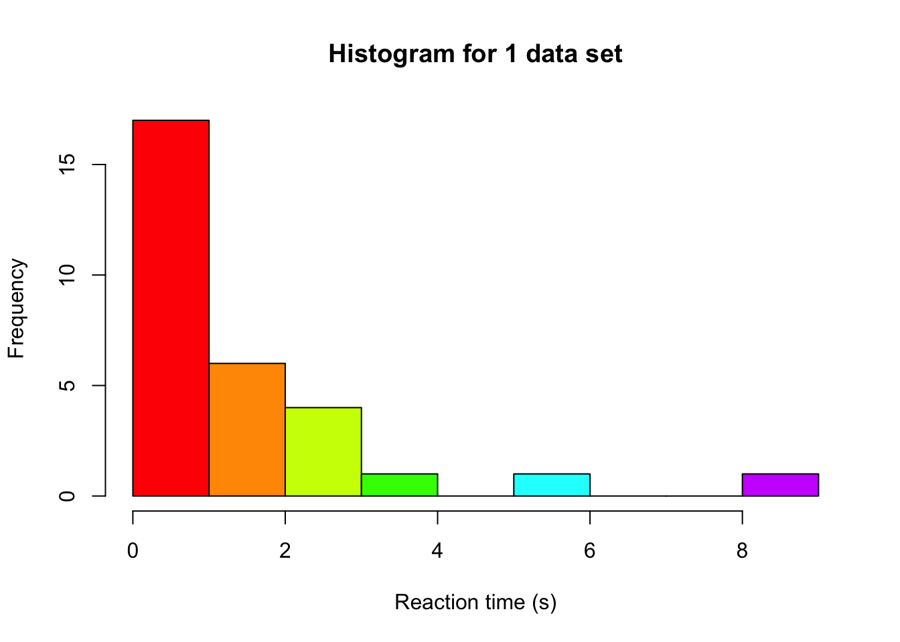
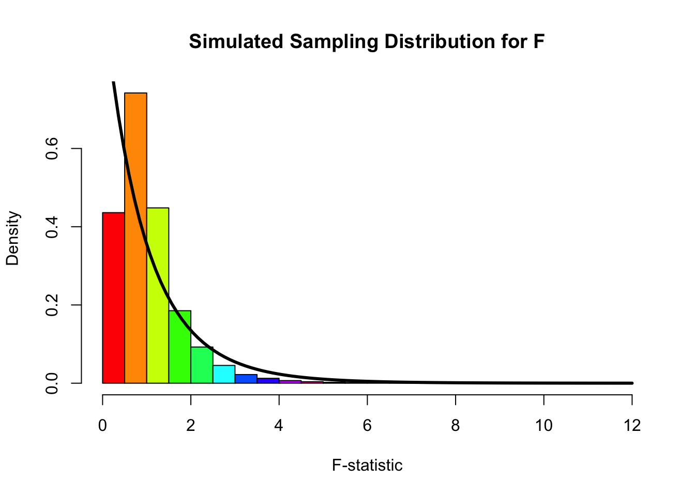
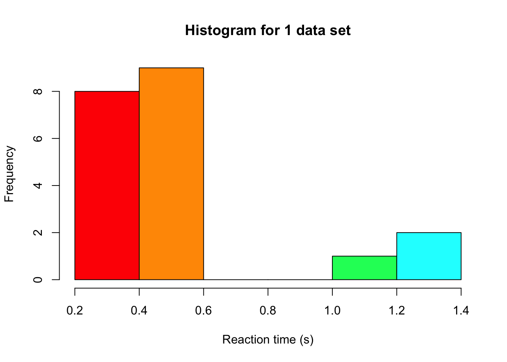
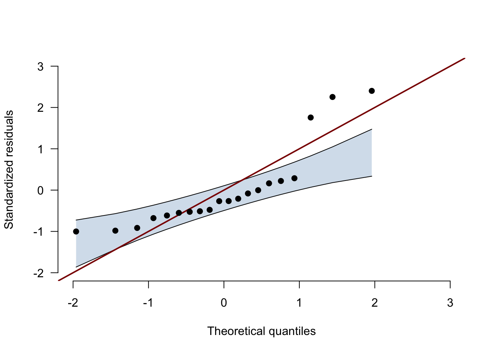

In this text we use simulations to see what happens to our inference when assumptions do not hold. We first look at an ANOVA on data with extreme values, and then at a t-test on skewed data in small samples (lecture 20).
ANOVA with extreme values
Simulating a single data set
We can investigate the effect of assumptions on our inference by running a small simulation study where we simulate 100,000 data sets under the null hypothesis. We can then check what the sampling distribution looks like: if it deviates from what we usually assume when conducting an ANOVA, we are at risk of increased or decreased type-1 errors. Let’s start by simulating a single data set, with 3 groups. We can imagine we simulate reaction times, because this variable is often not normally distributed (due to time always being positive, and most people responding as close to 0 as possible) and can contain extreme values (which lead to unequal variances).
set.seed(124) # for reproducabilitynGroups <-3# number of groupsgroupN <-10# sample size per groupgroupVar <-factor(rep(letters[1:3], each = groupN)) # create a variable with a,b,c to indicate group membershipdv <-abs(rt(nGroups*groupN, df =1)) # we use a t distribution with 1 df# we draw from the same distribution for all groups, because we operate under H0# and are therefore not using different means for the groupshist(dv, col =rainbow(10), xlab ="Reaction time (s)", main ="Histogram for 1 data set")

Note that the distribution we used to simulate, is the Cauchy distribution, which is a distribution that produces extreme values fairly often. Especially in cases of ANOVA, more extreme values can have a big impact on our inference. So while the ANOVA is relatively robust to violations of normality, it is pretty vulnerable to extreme observations because of their impact on the variance. These can still be detected by the usual normality assumption checks (Q-Q plot, Shapiro), or by other means, such as boxplots (see the tutorial assignment for an example).
Based on our 1 data set, we can fit the ANOVA model and compute the F-statistic:
# Produce ANOVA table:myTable <-summary(aov(dv ~ groupVar)) myTable
Df Sum Sq Mean Sq F value Pr(>F)
groupVar 2 14.11 7.056 2.578 0.0945 .
Residuals 27 73.91 2.738
---
Signif. codes: 0 '***' 0.001 '**' 0.01 '*' 0.05 '.' 0.1 ' ' 1
# extract df values:dfModel <- myTable[[1]][1, 'Df']dfError <- myTable[[1]][2, 'Df']# compare F-value to critical F of the assumed distribution to see if we reject# we set alpha to 0.05fVal >qf(0.95, dfModel, dfError)
[1] FALSE
Simulating many data sets
In order to get 100,000 F-values, we repeat the above steps 100,000 times, each time saving the F-statistic. This enables us to afterwards make a histogram of those 100,000 F-values and see how well the theoretical distribution fits
fValues <- rejectedNull <-numeric(1e5) # allocate an object to save the F values to, and our decisions# We use a fancy programming trick to repeat some code many times over# allowing us to easily repeat the drawing of 100,000 data setsfor (i in1:length(fValues)) {# same data simulation steps as above groupVar <-factor(rep(letters[1:3], each = groupN)) dv <-abs(rt(nGroups*groupN, df =1))# Produce ANOVA table: myTable <-summary(aov(dv ~ groupVar)) #extract F-value: and store in our object with all F-values fValues[i] <- myTable[[1]][1, 'F value'] rejectedNull[i] <- fValues[i] >qf(0.95, dfModel, dfError)}hist(fValues, col =rainbow(10), xlab ="F-statistic", main ="Simulated Sampling Distribution for F", freq =FALSE, breaks =25)curve(df(x, dfModel, dfError), from =0, to =12, add =TRUE, lwd =3, col ="black")

Based on the shape of the histogram and the overlaid theoretical F-distribution (the one we assume that the F-statistic follows when we attach a p-value to our observed F-statistic), we can see that there is not a perfect match: the histogram is a bit more located around 1, whereas the theoretical distribution has most of its mass close to 0. In addition to such a plot, we can also look at how many times we made a type-I error. We simulated under the null distribution (no group differences), so every time we rejected the null hypothesis based on the data, we made a type-I error. We used an alpha of 0.05, so if our assumption would hold we expect to have made this error in about 5% of the cases. However, when we look at the number of times we rejected the null hypothesis and express it as an proportion of the total, we see:
sum(rejectedNull) /length(rejectedNull)
[1] 0.01662
That our rejection rate is actually a lot lower than 5%! This might seem like good news (fewer errors), but it means that the sampling distribution we assume is not accurate. We likely have a lot less power than we originally thought we had based on an alpha of 0.05. So while it might seem like a good thing here (fewer type-I errors), overall it’s a bad thing, because the NHST framework is completely focused on having good control over type-I and type-II error rates.
t-test with skewed data
In lecture 20 we saw nonparametric tests, which work on the ranks of the data instead of the data themselves. But when would we actually prefer them over a t-test? Let’s investigate this with a second simulation study, now for two groups. We again simulate reaction times, but this time without the extreme values of the Cauchy distribution. Instead, we use a shifted log-normal distribution, which is a popular model for reaction times. Nobody responds faster than 0.2 seconds, most people respond fairly quickly (the median is 0.5 seconds), and every now and then someone takes much longer, which gives the distribution a long tail to the right. We compare three tests that JASP offers under Tests in the independent samples t-test. These are Student’s t-test, Welch’s t-test, and the Mann-Whitney test, which is the Wilcoxon rank-sum test from lecture 20.
Simulating a single data set
set.seed(3) # for reproducibilitygroupN <-10# sample size per group# a reaction time is 0.2 seconds plus a log-normal part with a median of 0.3 secondssimulateRT <-function(n) 0.2+rlnorm(n, meanlog =log(0.3), sdlog =1)groupA <-simulateRT(groupN)groupB <-simulateRT(groupN) # the same distribution for both groups, because we operate under H0hist(c(groupA, groupB), col =rainbow(10), xlab ="Reaction time (s)", main ="Histogram for 1 data set")

With only 20 observations a histogram is hard to read, so we also look at the Q-Q plot of the residuals with its confidence band, which you get in JASP under Assumption Checks → Q-Q plot residuals → Confidence interval. The function below draws the same plot as JASP does, and there is no need to understand every line of it.
# the Q-Q plot with its confidence band, computed as in JASP (jaspGraphs::plotQQnorm);# returns the number of points outside the bandqqPlotWithBand <-function(residuals, ciLevel =0.95) { z <-sort(as.numeric(scale(residuals))) # standardized residuals, from smallest to largest n <-length(z) i <-1:n theoretical <-qnorm(ppoints(n)) # where the points would be for perfectly normal data slope <-diff(quantile(z, c(0.25, 0.75), names =FALSE)) /diff(qnorm(c(0.25, 0.75))) intercept <-quantile(z, 0.25, names =FALSE) - slope *qnorm(0.25) lower <- intercept + slope *qnorm(qbeta((1- ciLevel) /2, i, n - i +1)) upper <- intercept + slope *qnorm(qbeta(1- (1- ciLevel) /2, i, n - i +1)) axisRange <-range(pretty(c(theoretical, z, lower, upper))) # same range on both axesplot(theoretical, z, type ="n", xlim = axisRange, ylim = axisRange, bty ="n", las =1,xlab ="Theoretical quantiles", ylab ="Standardized residuals")polygon(c(theoretical, rev(theoretical)), c(lower, rev(upper)),col =adjustcolor("steelblue", alpha.f =0.25), border =NA)lines(theoretical, lower)lines(theoretical, upper)abline(0, 1, col ="darkred", lwd =2) # the line y = xpoints(theoretical, z, pch =19)invisible(sum(z < lower | z > upper))}
residualsAB <-c(groupA -mean(groupA), groupB -mean(groupB)) # each observation minus its group meannOutside <-qqPlotWithBand(residualsAB)

nOutside
[1] 3
If the residuals were normally distributed, the points would stay inside the band. Here 3 points fall outside the band, at the slow end of the reaction times, and together the points form the curve that a long right tail produces.
Simulating many data sets
In order to get the type-I error rate of each test, we repeat the above steps 100,000 times, each time saving whether each test rejects the null hypothesis. We then do the same once more with an effect, by adding 0.5 seconds to every reaction time in group B, so that every rejection is a correct decision and every failure to reject is a type-II error. And to see what we would lose with well-behaved data, we repeat both for normally distributed reaction times with the same mean (0.69 seconds) and standard deviation (0.65 seconds).
# the proportion of data sets in which each test rejects H0, with an alpha of 0.05rejectionRate <-function(simulateData, shift, nSims =1e5) { rejected <-matrix(NA, nrow = nSims, ncol =3,dimnames =list(NULL, c("Student", "Welch", "Mann-Whitney")))for (i in1:nSims) { groupA <-simulateData(groupN) groupB <-simulateData(groupN) + shift rejected[i, ] <-c(t.test(groupA, groupB, var.equal =TRUE)$p.value,t.test(groupA, groupB)$p.value, # Welch is the default in Rwilcox.test(groupA, groupB)$p.value) <0.05 }colMeans(rejected)}simulateNormalRT <-function(n) rnorm(n, mean =0.69, sd =0.65)rates <-rbind("Skewed, type-I error rate"=rejectionRate(simulateRT, shift =0),"Skewed, power"=rejectionRate(simulateRT, shift =0.5),"Normal, type-I error rate"=rejectionRate(simulateNormalRT, shift =0),"Normal, power"=rejectionRate(simulateNormalRT, shift =0.5))knitr::kable(rates, digits =3)
Student
Welch
Mann-Whitney
Skewed, type-I error rate
0.035
0.028
0.045
Skewed, power
0.590
0.577
0.791
Normal, type-I error rate
0.051
0.049
0.044
Normal, power
0.370
0.365
0.330
We simulated the first row under the null distribution (no group differences), so every time we rejected the null hypothesis based on the data, we made a type-I error. We used an alpha of 0.05, so if our assumption would hold we expect to have made this error in about 5% of the cases. The Mann-Whitney test comes close, at 0.045. That is no coincidence. Under the null hypothesis both groups come from the same distribution, so every way of dividing the ranks 1 to 20 over the two groups is equally likely, whatever the shape of that distribution. (It lands slightly below 5% because with 10 people per group, the p-value can only take on a limited set of values.)
The two t-tests reject the null hypothesis less often than they should, at 0.035 (Student) and 0.028 (Welch). Just like in the ANOVA case, this might seem like good news (fewer errors), but it means that the sampling distribution we assume is not accurate, and the second row shows what that costs us. The Mann-Whitney test detects the effect in 79% of the data sets, against 59% for Student’s t-test. The slow responses in the long tail inflate the standard deviation of each group, which makes the t-statistic smaller, whereas ranking limits their influence (a reaction time of 3 seconds simply becomes rank 20). Welch’s t-test does not help here either, because it corrects for unequal variances, and our two groups come from the same distribution.
So should we always use the Mann-Whitney test? The last two rows say no. With normal data, Student’s t-test has a type-I error rate of about 5% and a bit more power than the Mann-Whitney test (37% versus 33%). This is the point of Jane Superbrain Box 15.1 in the book, which says that nonparametric tests only have less power when the assumptions of the parametric test are met. Notice the size of the differences though. With normal data the Mann-Whitney test loses 4 percentage points, while with our skewed reaction times the t-test loses 20.
Concluding thoughts
With extreme values, the F-distribution no longer describes our F-statistics, and we make fewer type-I errors than alpha promises, which costs us power.
With small and skewed samples, the t-tests are also conservative and clearly less powerful than the Mann-Whitney test, which keeps its type-I error rate close to 5% whatever the shape of the distribution.
Welch’s t-test protects against unequal variances, not against skewness.
When the assumptions do hold, the t-test has a little more power than the Mann-Whitney test.
In practice, the Q-Q plot of the residuals with its confidence band is how we spot these problems.